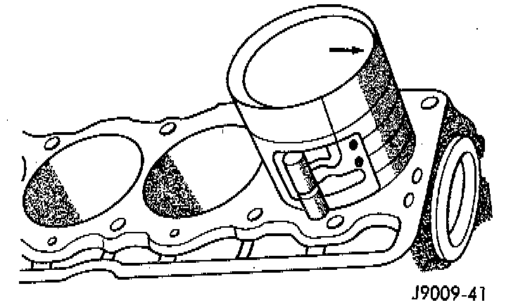

Installation

1. Clean the cylinder bores thoroughly. Apply a light film of clean engine oil to the bores with a clean lint-free cloth.
2. Install the piston rings on the pistons if removed.
3. Lubricate the piston and rings with clean engine oil.
CAUTION: Ensure that connecting rod bolts DO NOT scratch the crankshaft journals or cylinder walls. Short pieces of rubber hose slipped over the connecting rod bolts will provide protection during installation.
4. Use a piston ring compressor to install the connecting rod and piston assemblies through the top of the cylinder bores.
5. Ensure the arrow on the piston top points to the front of the engine.
6. Raise the vehicle.
7. Each bearing insert is fitted to its respective journal to obtain the specified clearance between the bearing and the journal. In production, the select fit is obtained by using various-sized, color-coded bearing inserts as listed in the Connecting Rod Bearing Fitting Chart. The color code appears on the edge of the bearing insert. The size is not stamped on inserts used for production of engines.
8. The rod journal is identified during the engine production by a color-coded paint mark on the adjacent cheek or counterweight toward the flange (rear) end of the crankshaft. The color codes used to indicate journal sizes are listed in the Connecting Rod Bearing Fitting Chart.
9. When required, upper and lower bearing inserts of different sizes may be used as a pair. A standard size insert is sometimes used in combination with a 0.025 mm (0.001 inch) undersize insert to reduce clearance 0.013 mm (0.0005 inch).
CAUTION: DO NOT intermix bearing caps. Each connecting rod and bearing cap is stamped with the cylinder number. The stamp is located on a machined surface adjacent to the oil squirt hole that faces the camshaft side of the cylinder block.
10. Install the connecting rod bearing caps and inserts in the same positions as removed.
CAUTION: Verify that the oil squirt holes in the rods face the camshaft and that the arrows on the pistons face the front of the engine.
11. Install the oil pan and gaskets as outlined in the installation procedure.
12. Lower the vehicle.
13. Install the engine cylinder head, push rods, rocker arms, bridges, pivots and engine cylinder head cover.
14. Fill the crankcase with engine oil.